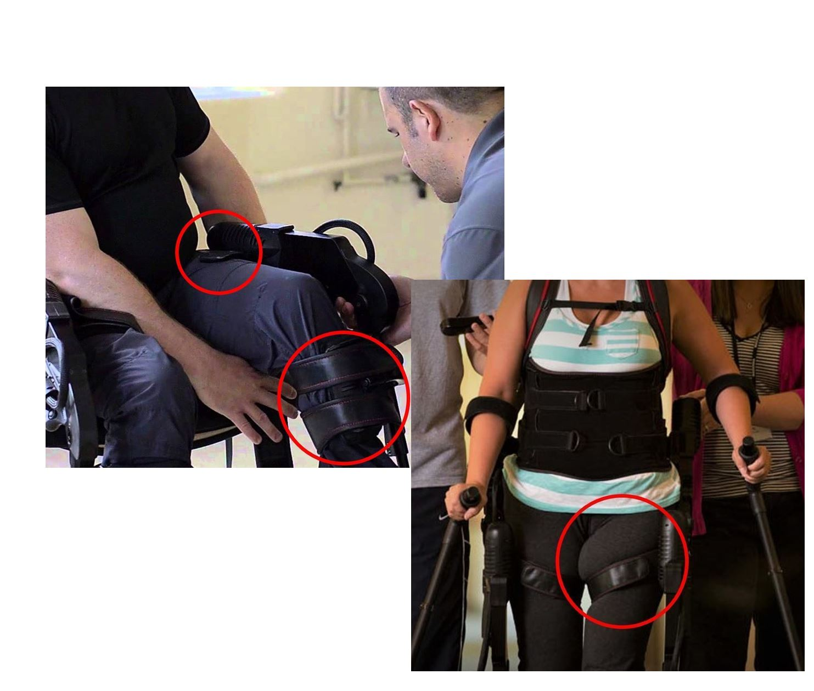
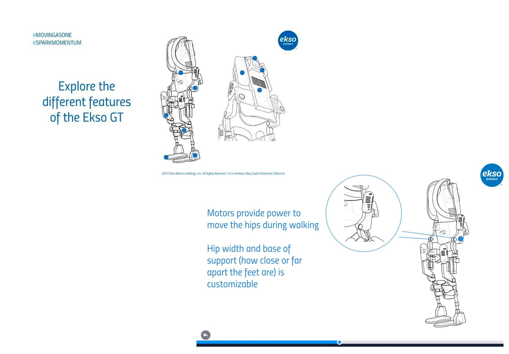

Engineering and Design Internship
Ekso is a pioneer in wearables and exoskeletons. By applying the technology to gait rehabilitation for spinal chord injury (SCI) and stroke, they help survivors get back on their feet and enahnce experiences for physical therapists. I had the opportunity to work on their flagship medical robot, called the Ekso GT, for the summer.
Ekso is a pioneer in wearables and exoskeletons. By applying the technology to gait rehabilitation for spinal chord injury (SCI) and stroke, they help survivors get back on their feet and enahnce experiences for physical therapists. I had the opportunity to work on their flagship medical robot, called the Ekso GT, for the summer.
- Teams
- Mechanical Design, Product Marketing
- Date
- June 2017 - Aug 2017
- Location
- San Francisco Bay Area | Richmond, CA

Intro
"How might we build on Ekso's existing technology to improve future product capabilities and capture more users?"
I created conceptual designs, CAD models and functional prototypes for mechanical exoskeleton improvements, and worked alongside the VPs of Product and Marketing to align clinical and customer experiences with the capabilities of Ekso's devices.
Bracing Interfaces
The Ekso GT has key bracing interfaces to provide stability and control to the patient during gait. One of my main projects was a high-level redesign of the leg braces, with the goal of making the device more inclusive and comfortable for a wider size range of patients.
To understand user needs I did ethnographic research on patient experiences, conducted interviews with physical therapists, and performed storyboarding exercises. I analyzed physiological data needed to model relevant anatomy and communicated with suppliers to compare candidate manufacturing processes and materials. I iterated on multiple concepts and involved users frequently in the process through design reviews and piloting sessions.
My designs inspired final forms which were put into production and brought to market shortly after my internship!
Deliverables
Storyboards, Solidworks Models, 3D Prints, Findings Report
The Ekso GT has key bracing interfaces to provide stability and control to the patient during gait. One of my main projects was a high-level redesign of the leg braces, with the goal of making the device more inclusive and comfortable for a wider size range of patients.
To understand user needs I did ethnographic research on patient experiences, conducted interviews with physical therapists, and performed storyboarding exercises. I analyzed physiological data needed to model relevant anatomy and communicated with suppliers to compare candidate manufacturing processes and materials. I iterated on multiple concepts and involved users frequently in the process through design reviews and piloting sessions.
My designs inspired final forms which were put into production and brought to market shortly after my internship!
Deliverables
Storyboards, Solidworks Models, 3D Prints, Findings Report

Clinical User Experience
When using the Ekso GT, the physical therapist controls and manages the patient and their settings using a remote on the back of the device. To continue easing the rehab process for physical therapists, I did a UX study for the remote to inform more effective future designs.
To understand the experience of using the remote, I did deep dives into the product flow and walked through the set up and removal process first hand. I conducted user interviews to gain insight into the various venues which the remote would function in, including training environments and live therapy. In addition to qualitative research, I analyzed usage data to investigate the frequency that certain features were being used and potential correlations between them.
Deliverables
User Flows, UI & UX Recommendations, Python Code, Summative Report
When using the Ekso GT, the physical therapist controls and manages the patient and their settings using a remote on the back of the device. To continue easing the rehab process for physical therapists, I did a UX study for the remote to inform more effective future designs.
To understand the experience of using the remote, I did deep dives into the product flow and walked through the set up and removal process first hand. I conducted user interviews to gain insight into the various venues which the remote would function in, including training environments and live therapy. In addition to qualitative research, I analyzed usage data to investigate the frequency that certain features were being used and potential correlations between them.
Deliverables
User Flows, UI & UX Recommendations, Python Code, Summative Report

Interactive Web Content
Because medical exoskeletons are extremely new in the field, they can be difficult to understand and even frightening to use for the first time. During my internship, the VP of Marketing challenged me to tackle this issue by creating a showcase of the form and functions of their flagship robot to serve as an introduction for new users.
After collaborating with both the engineering and marketing teams, my concept was a hierarchical view of the device from front and back, with the ability to interactively zoom in on key points. To maintain the integrity of the design while presenting a less technical view of the robot, I used line art generated from CAD models. The content is live on Ekso's site and has inspired subsequent new user guides.
Deliverables
Interaction Walkthrough, Final Prezi
Because medical exoskeletons are extremely new in the field, they can be difficult to understand and even frightening to use for the first time. During my internship, the VP of Marketing challenged me to tackle this issue by creating a showcase of the form and functions of their flagship robot to serve as an introduction for new users.
After collaborating with both the engineering and marketing teams, my concept was a hierarchical view of the device from front and back, with the ability to interactively zoom in on key points. To maintain the integrity of the design while presenting a less technical view of the robot, I used line art generated from CAD models. The content is live on Ekso's site and has inspired subsequent new user guides.
Deliverables
Interaction Walkthrough, Final Prezi

Final Thoughts
Reflection
Ekso operated with a "show me the money" mantra, meaning that it was important to make decisions with the value proposition in mind. It was crucial to support designs with thorough research and data highlighting how they will benefit patients and create value for customers. I am grateful for the exposure to multiple functions of the business, and enjoyed working with such a passionate, entrprenuruial team!
Takeaways
The feedback I gathered from user testing was invaluable to my design trajectory, and solidified the notion of actively involving end users in my process. In working on a product that influenced both patient and clinician experience, I deepened my understanding of the balance between harmonizing conflicting perspectives and making calculated trade-offs in order to optomize a product or system.